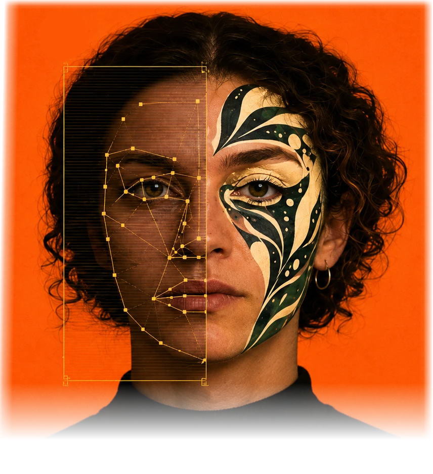

Disrupt
the read.
Ghostmaxxing it's a realtime webapp for testing face-recognition camouflage is used to run workshops. Runs locally, data stays with you.
It can also Augment Reality with overlays over faces, so to drive your makeup with techniques proven to be successful, and Ghostyle is the name of those plugins. Check the Ghostyle archive.
